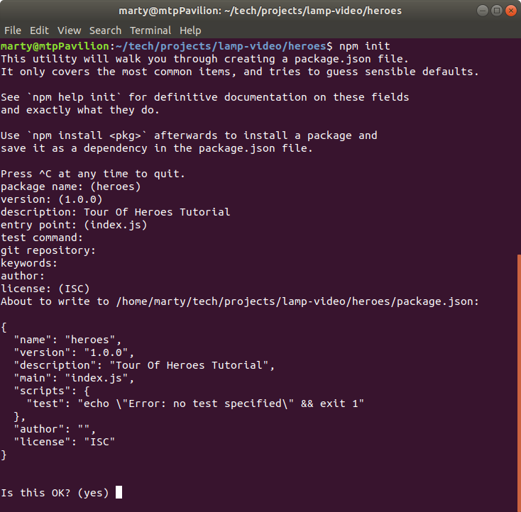
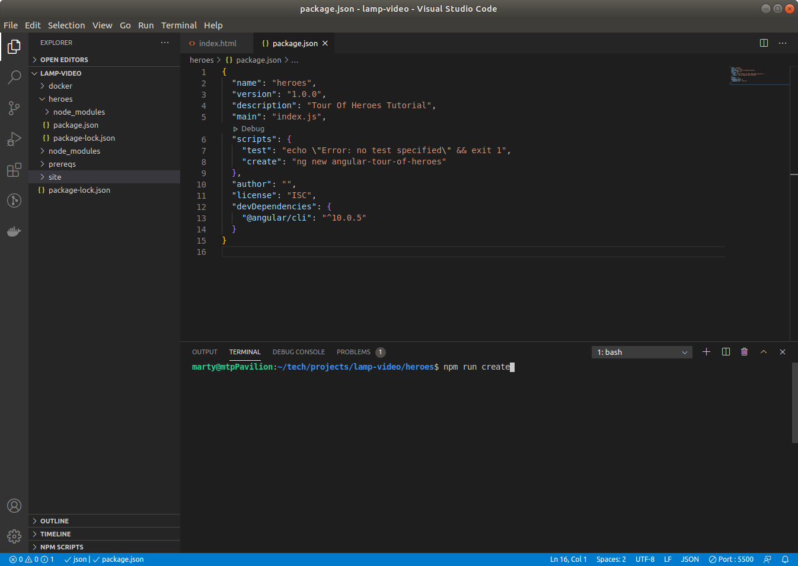
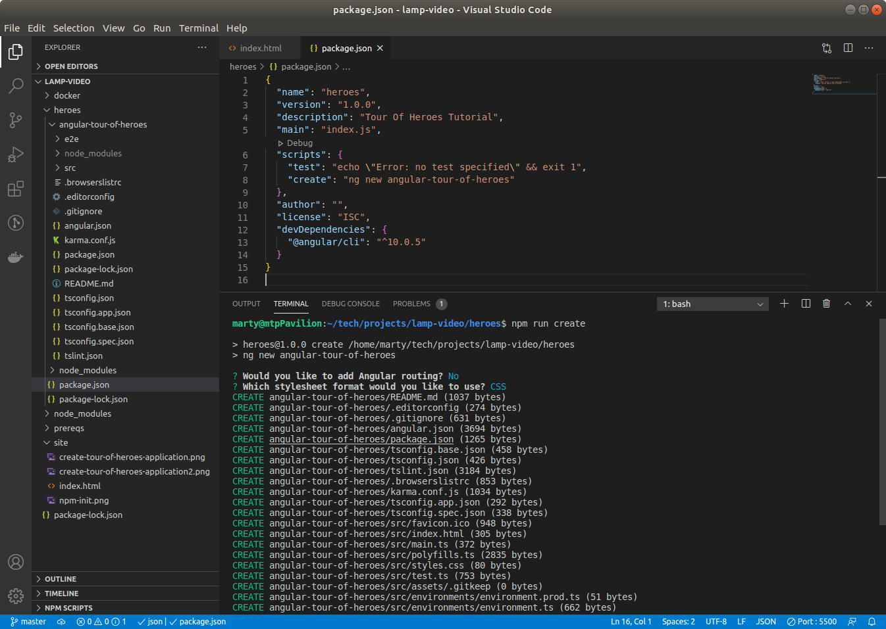
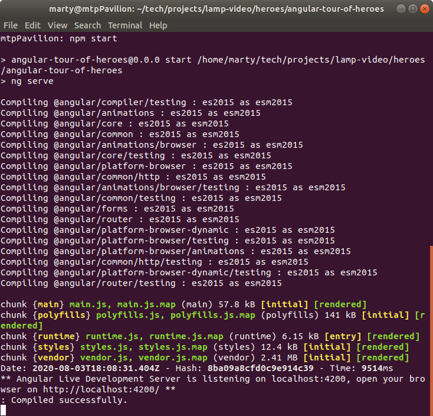
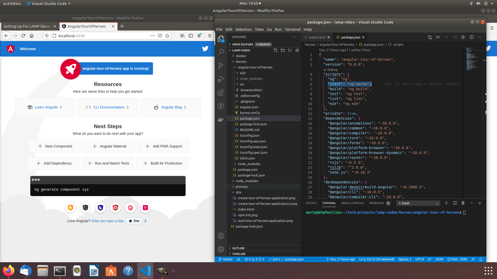
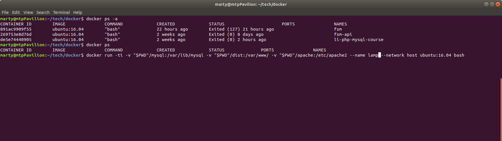

Local LAMP Development With Docker
What is LAMP?
Linux
Linux is a family of open source Unix-like operating systems based on the Linux kernel, an operating system kernel first released on September 17, 1991, by Linus Torvalds.
Angular
Linux is a family of open source Unix-like operating systems based on the Linux kernel, an operating system kernel first released on September 17, 1991, by Linus Torvalds.
MySQL
MySQL is an open-source relational database management system.
PHP
PHP is a general-purpose scripting language that is especially suited to web development.
What is Docker?
Docker is a set of platform as a service products that use OS-level virtualization to deliver software in packages called containers.
PreReqs - assumptions
Docker Is Installed
docker -v
Node Is Installed
node -v
NPM Is Installed
npm -v
Build - Angular Tour Of Heroes
Create A NPM Project
- Enter "npm init"
- enter a name ("heroes")
- select the defaults
- select "yes" for ok

Install The Angular CLI
Install the Angular CLI so it will be easy to create the Tour Of Heros Project.
I usually install the CLI as a dev not a global dependant.
Most tutorials expect you to install the CLI as a global dependant.
I find it easier to manage multiple projects with different versions of the CLI
by installing them as local dependant.
- npm i @angular/cli --save-dev
Add A NPM Script To Create An Application

Notes:
- Add a new script entry on line 8 of the package.json file.
- Execute the script in the terminal.
- Answer No To Routing
- Select CSS
Create The Application

Run The Application
Note: your terminal must be in the angular-tour-of-heroes directory.

The generated application.

Setup The Project.
https://angular.io/tutorial/toh-pt0
Create The hero editor.
https://angular.io/tutorial/toh-pt1
Display a List.
https://angular.io/tutorial/toh-pt2
Setup Docker - Linux-AMP
docker run -ti -v "$PWD"/mysql:/var/lib/mysql -v "$PWD"/dist:/var/www/ -v "$PWD"/apache:/etc/apache2 --name lamp --network host ubuntu:16.04 bash

- docker run -ti (execute a container with interactive terminal flags)
- -v "$PWD"/mysql:/var/lib/mysql (map the current directory + "/mysql" on the host to "/var/lib/mysql" in the container)
- -v "$PWD"/dist:/var/www/ (map the host dist directory (where angular builds) to the container's www directory (where apache serve static files) )
- --name lamp (name of the container)
- --network host (map the host ports to the container ports directly)
- ubuntu:16.04 (docker image to create the container from)
- bash (the program to execute on start up)
Setup PHP - LAM-PHP
Start And Interact With The Container
- docker ps (see if lamp is running)
- if lamp is listed done
- docker ps -a (see if lamp exists)
- if lamp does not exist Setup Docker
- docker start lamp (start the lamp container)
- docker exec -it lamp bash
Install Apache In The Container
- apt-get update
- apt-get install nano
- apt-get install apache2
- service apache2 start
- cd /etc/apache2
- nano apache2.conf
- go to last line and add "ServerName localhost
- stop (service apache2 stop) and start (service apache2 start) apache
Install PHP In The Container
- apt-get update
- stop and start apache
- apt-get install php libapache2-mod-php php-mcrypt php-mysql
- go to cd /var/www/html
- nano info.php
- <?php phpinfo() ?>
- restart apache (service apache2 restart) and go to http://localhost/info.php
Setup MySQL - LA-MySQL-P
Connect PHP and MySQL
Connect Angular and PHP/MySQL